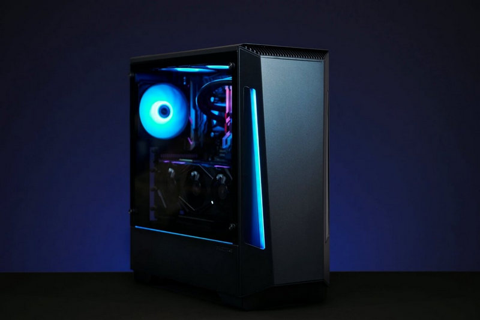

Un ordenador es un sistema electrónico que sirve para almacenar y procesar datos. El ordenador toma datos del exterior (a través de las unidades de entrada), los almacena en su memoria, los procesa y los envía al operador (a través de las unidades de salida).
